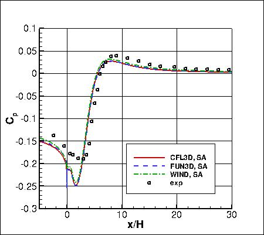
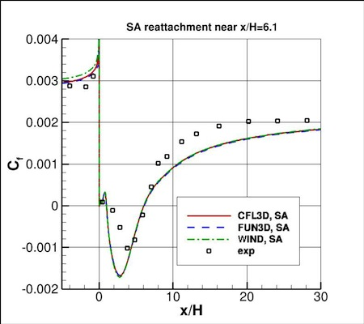
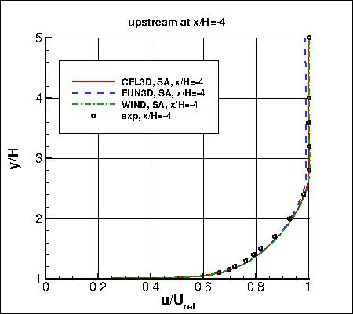
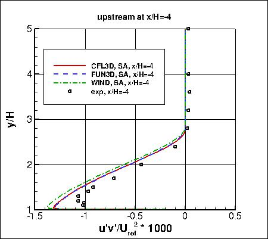
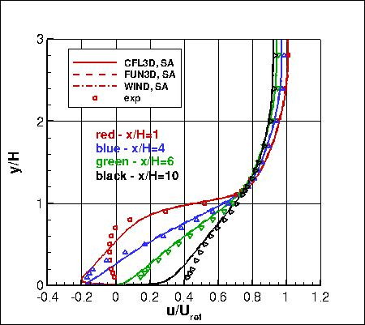
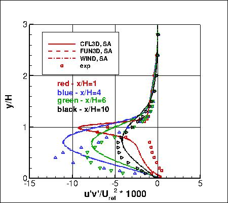

|
Langley Research CenterTurbulence Modeling Resource |
Jump to: SSTm Results, SST-Vm Results, Wilcox2006-klim-m Results, K-kL-MEAH2015m Results, EASMko2003-S Results, K-e-Rt Results
Return to: Backward Facing Step Validation Intro Page
Return to: Turbulence Modeling Resource Home Page
2D Backward Facing Step Validation Case
SA Model Results
Link to SA equations






Note that thorough
grid studies were not performed for validation cases such as this one.
Some effort was made to ensure reasonable grid resolutions, but there may still be
small noticeable discretization errors. Therefore, these validation results shown should be considered
representative, but not "truth."
The plots shown compare the SA results from three independent
CFD codes: CFL3D, FUN3D, and WIND, with the
experimental data for ReH=36,000.
(Note that Cp values have been shifted so that Cp is close to zero near x/H=40.)
Both CFL3D and FUN3D used freestream value of the SA turbulence field variable (relative to laminar)=3,
while WIND used a value of 5.
Please read note 5 on Notes on running CFD page.
These results are from the second-finest grid (257x257, 97x257, 385x449, 129x449).
(Note: results here are almost identical to SA results using a different series of grids for which
the incoming boundary layer was specified at x/H=-4 as a boundary condition, as described in: NASA/TM-2008-215537,
November 2008.)
Reattachment is predicted by the SA model near x/H = 6.1.
Note that these are compressible code results at "essentially incompressible" conditions of M=0.128.
There may be a very small influence of compressibility.
Cp experimental data and CFD results have been shifted so that Cp is approximately 0 near x/H=40 (see brief
discussion on Backward Facing Step Validation Intro Page).
The data files from CFL3D are given here:
backstep_cfl3d_cp_sa.dat,
backstep_cfl3d_cf_sa.dat,
backstep_cfl3d_vel_sa.dat,
backstep_cfl3d_uv_sa.dat.
(Note: the profiles have been interpolated using Tecplot software onto pre-set points, that may or may
not correspond to the actual grid points or grid cells used in the computation.)
A typical CFL3D input file is:
backstep_cfl3d_typical_sa.inp.
A typical FUN3D input file is:
fun3d.nml_typical_sa.
Jump to: SSTm Results,
SST-Vm Results,
Wilcox2006-klim-m Results,
K-kL-MEAH2015m Results,
EASMko2003-S Results,
K-e-Rt Results Return to: Backward Facing Step Validation Intro Page Return to: Turbulence Modeling Resource Home Page
Responsible NASA Official:
Ethan Vogel
Page Curator:
Clark Pederson
Last Updated: 03/12/2025